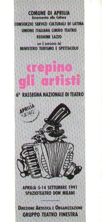
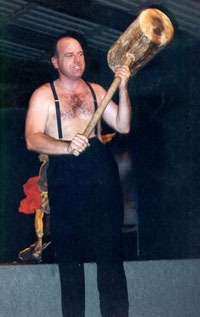

|  |
6° RASSEGNA NAZIONALE TEATRO
APRILIA 5-14 SETTEMBRE 1991
SPAZIOTEATRO ALL’APERTO
CENTRO DON MILANI VIA MILANO
PROGRAMMA
GIOVEDÌ 5 SETTEMBRE ORE 21
Spazioteatro Don Milani
NON VENITE MANGIATI dei Fratelli Capitoni
SABATO 7 SETTEMBRE ore 21
Spazioteatro Don Milani
VOLEVAMO ESSERE GLI U2 della Coop Argot-Soc per gli attori
LUNEDì 9 SETTEMBRE ore 21
Spazioteatro Don Milani
Sotto le stelle del jazz
FABIO PALESE TRIO IN CONCERTO
Martedì 10 SETTEMBRE ore 21
Spazioteatro Don Milani
ELOGIO DELLA MOSTRUOSITÀ di Leo Bassi
|  |
| Leo Bassi |
GIOVEDÌ 12 SETTEMBRE ore 21
Spazioteatro Don Milani
IL PICCOLO PRINCIPE del Gruppo Giocoteatro
SABATO 14 SETTEMBRE ore 21
Spazioteatro Don Milani
DIMOSTRAZIONE SPETTACOLO degli allievi del corso di teatro
4-14 SETTEMBRE
CORSO RESIDENZIALE NAZIONALE DI TEATRO
“L’ORIGINE DEL TEATRO” condotto da Renato Carpentieri
MOSTRA FOTOGRAFICA
Contrapposizioni e riflessi. Interpretazione di una città di Luciano Tramannoni